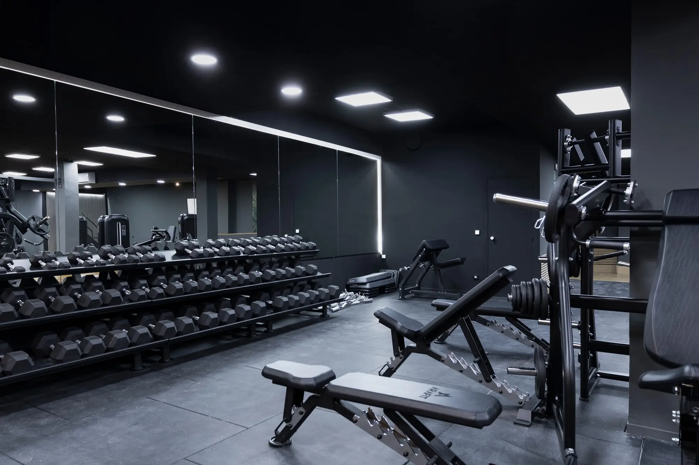
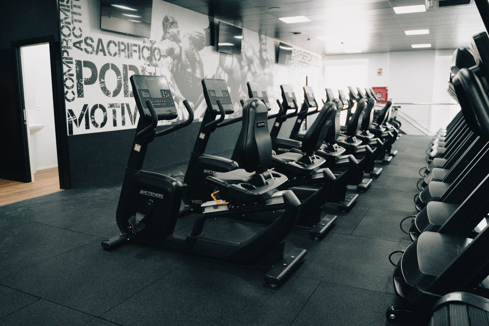

Sala de musculación y zona de cardio


Sala de musculación: un espacio para trabajar la fuerza, desarrollar tus capacidades físicas y progresar a tu propio ritmo.
Zona de cardio: ideal para mejorar la resistencia cardiovascular y mantenerte activo mediante diferentes ejercicios.
Sesiones conjuntas: sesiones en grupo que combinan ejercicio, motivación y diversión, siempre con la orientación de un monitor.
Entrenamiento personalizado: recibe orientación para mejorar tu técnica, organizar tus rutinas y avanzar hacia tus objetivos.
Descubre todas las opciones disponibles en nuestras páginas de instalaciones y actividades.